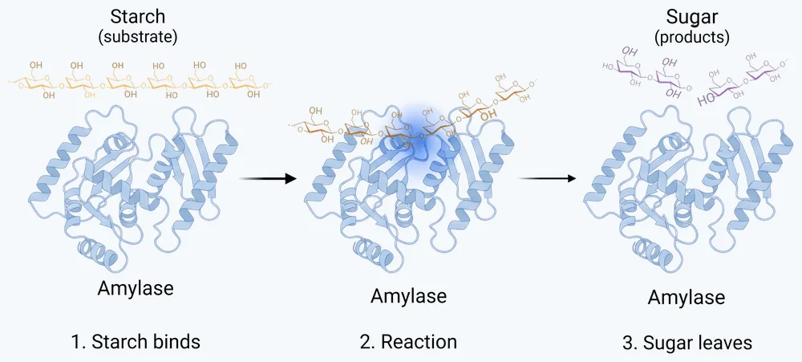
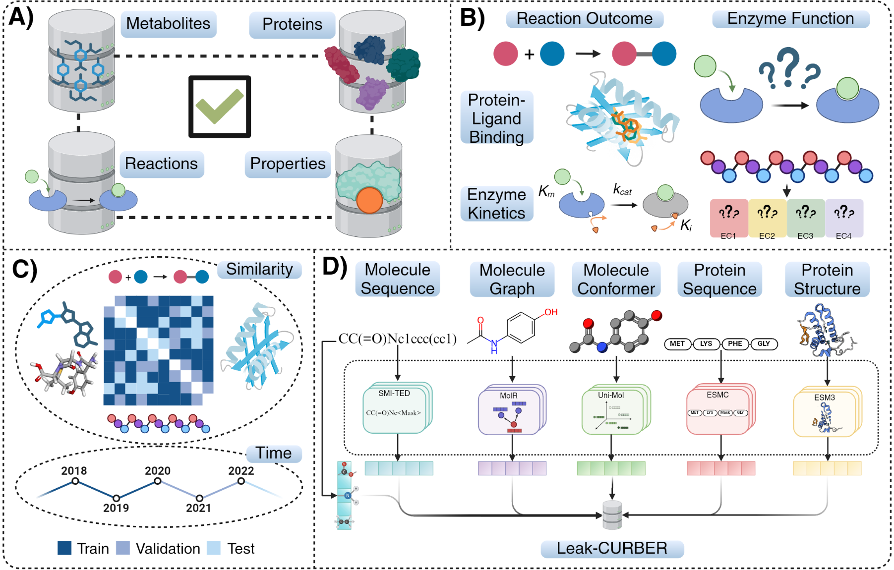

Enzymes
Amylase, an in your saliva, cuts starch, its , into sugar. Without enzymes, reactions in our bodies are far too slow. People also use enzymes in medicine, food and detergents.



Random splits let models reuse similar proteins, molecules and reactions. Leak-CURBER removes that overlap and measures what is left.

Overview of Leak-CURBER. (A) It joins enzymatic reactions, enzymes, molecules, kinetic parameters and binding records in one schema. (B) It supports four task families (ten subtasks): reaction outcome, enzyme function, kinetic parameters and protein–ligand binding affinity. (C) It provides grouped-random, temporal and similarity-based splits. (D) Ready-to-use multimodal inputs support sequence, structure and reaction-aware learning.
Amylase, an in your saliva, cuts starch, its , into sugar. Without enzymes, reactions in our bodies are far too slow. People also use enzymes in medicine, food and detergents.

A lab measures one enzyme and one molecule at a time, so few get measured. Models learn from those results and predict the rest. They predict what an enzyme makes, how fast it works and which molecules bind to it.
One reaction appears in six databases under six different names. Every lab builds its own dataset from these sources, so results cannot be compared.
P00330RHEA:10736EC 1.1.1.1C00469ethanolCCOhappens when close matches, such as related proteins or similar molecules, land in both train and test. In a random , the model remembers the answer, so the score looks too high. In a similarity split, the test holds no close matches, so the score is fair.
Leak-CURBER fixes both: it joins public databases into one dataset and builds splits that keep close matches out of the test.
We present Leak-CURBER, the largest multimodal, leakage-controlled benchmark for evaluating machine learning and deep learning models for enzymatic reactions. Leak-CURBER standardizes data from 10 biochemical databases and curates datasets with multimodal inputs, metrics, and leakage-controlled splits for 4 tasks. The benchmark comprises 10 subtasks: prediction of reaction outcomes (2), enzyme function (2), kinetic parameters (3), and protein–ligand binding (3). Leak-CURBER establishes new evaluation protocols that control for train/validation/test overlap across protein sequences and structures, molecule strings and structures, and reaction similarity, thereby exposing generalization failures of learning methods. Evaluating the state-of-the-art (SOTA) models on Leak-CURBER shows that their strong performance degrades sharply under these splits, often approaching random classification or retrieval performance, and near-zero regression performance. Leak-CURBER includes precomputed embeddings, continual benchmark releases, reproducible curation scripts, and a public leaderboard to support reliable comparison of enzymatic-reaction models. Leak-CURBER is publicly available at https://github.com/bisect-group/Leak-CURBER.
Models need numbers as input. An turns a protein or molecule into numbers. We compute these once, so users can skip that costly step.
Leak-CURBER has four task families and ten subtasks.
Regression subtasks use standardized units and log-transformed labels. Enzyme function subtasks use hierarchical EC evaluation.
Enzymatic reaction tasks leak in several ways. We use the grouped-random split as an in-distribution reference. The other splits test generalization along one similarity axis at a time. Each task uses the splits that fit its inputs.
Records that share a protein sequence, molecule, reaction SMILES or label go to the same partition. A reaction and its reverse form one group. This removes exact repeats but keeps related examples close.
Protein sequence (P-seq). MMseqs2 compares sequences. Test proteins have low maximum identity to the training set.
Protein structure (P-struct). Foldseek compares structures. We use the experimental chain first, then AlphaFold, ESMFold2 and ESM3. This split catches remote homologs that keep the same fold.
Molecule 2D and 3D (Mol-2D, Mol-3D). Mol-2D compares Morgan fingerprints with Tanimoto similarity. Mol-3D compares Uni-Mol2 conformer embeddings.
Reaction (DRFP). Differential reaction fingerprints encode the change from reactants to products. Test reactions stay below a similarity threshold to the training set.
For every similarity split, a test entity must fall below the threshold to all training entities. Above-threshold overlap is 0% by construction.
Records split by UniProt annotation date. Validation and test records are later than training records. This approximates prospective use.
Pick a task to see how the score on each split. Regression tasks report .
Takeaway.
The leaderboard has one board per subtask. Each board scores the hardest leakage-controlled split of that subtask. We call it the leaderboard split. It is the split, other than grouped-random, with the lowest mean score over the baselines in the paper. MetaCyc records are a licensed private test set.
Each subtask has two metrics. Regression uses SCC and MSE on log10 targets. Enzyme classification and retrieval use EC level accuracy at Level 4 and Level 1 (k = 1). Forward prediction and retrosynthesis use Top-1 and Top-10 exact match.
A reference predictor B sets the zero point. For SCC, B is 0. For MSE, B is the training-mean predictor. For EC level accuracy, B always predicts the most frequent training EC. For Top-k, B is 0. The perfect value \(P_m\) is 1, or 0 for MSE.
Let \(\mathcal{M}_t\) be the two metrics of subtask t, and let m be one of them. The score is
\[ s_{tm} = \max\!\left(\frac{M_{tm} - B_{tm}}{P_m - B_{tm}},\, -1\right) \]
\[ S_t = \frac{1}{|\mathcal{M}_t|} \sum_{m \in \mathcal{M}_t} s_{tm} \]
Here \(M_{tm}\) is the model result and \(B_{tm}\) is the reference result. A score of 0 equals the reference. A score of 1 is perfect. A negative score is worse than the reference.
| Subtask | Leaderboard split |
|---|---|
| kcat | P-seq |
| KM | P-struct |
| Ki | P-struct |
| Kd | P-seq |
| EC50 | P-seq |
| IC50 | Time |
| Enzyme classification | P-seq |
| Enzyme retrieval | DRFP |
| Forward reaction prediction | DRFP |
| Retrosynthesis | DRFP |
@inproceedings{ahmed2026leakcurber,
title={...},
author={Ahmed, Adhil and Balaji, Roshan and Bhatt, Nirav Pravinbhai},
booktitle={Advances in Neural Information Processing Systems (NeurIPS) Evaluations and Datasets Track},
year={2026}
}